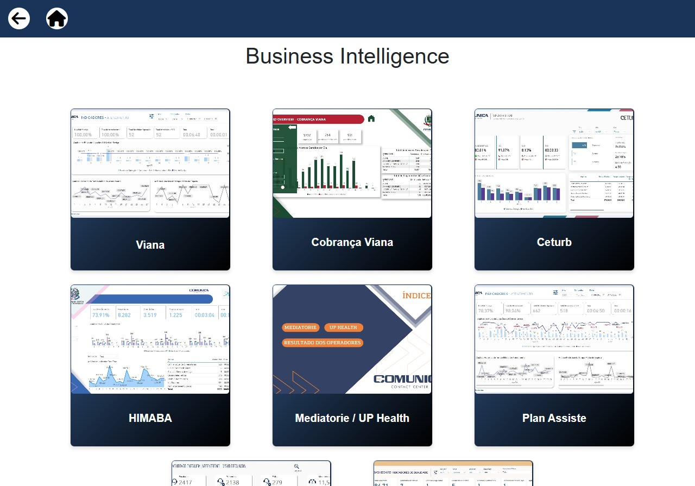
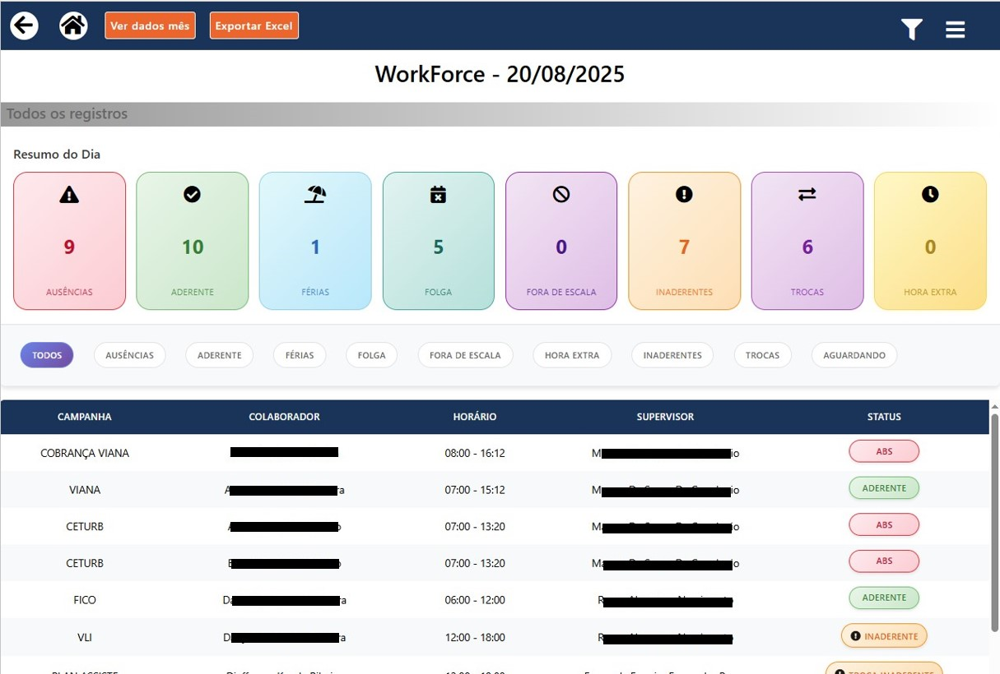
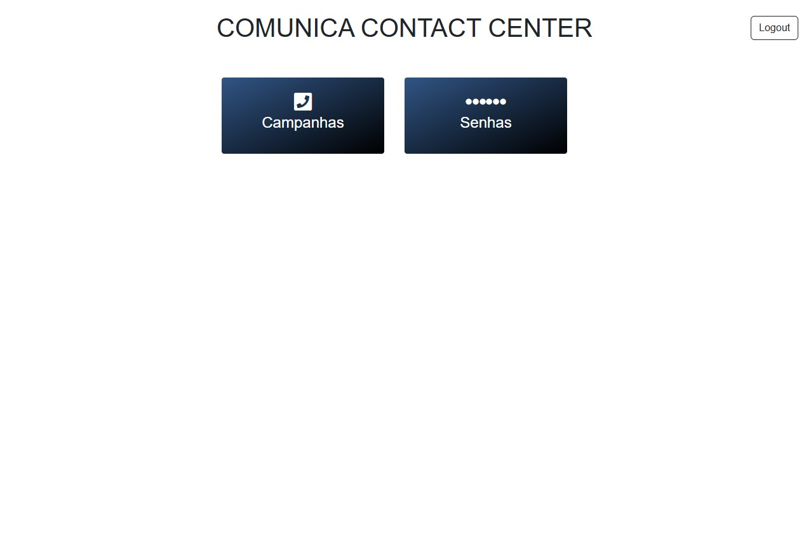

O Sistema Zeus é uma solução interna com funções administrativas e operacionais, desenvolvido para a empresa Comunica Contact Center, um Contact Center com foco em Customer Relationship Management (CRM).
O sistema foi desenvolvido em equipe, com foco em agilidade no registro dos atendimentos e histórico de solicitações via integração com banco de dados MySQL.
As principais funcionalidades incluem registro das informações dos atendimentos, geração de relatórios e gestão de funcionários.
⚠️ Para melhor visualização das imagens, gire o celular na horizontal.
Administrativo:
Tela Inicial
Apresenta a visão geral do sistema com acesso rápido aos módulos administrativos. Certos setores têm acesso total, conforme nível de permissão.

Gráficos de Produtividade Integrados
Tela que exibe dashboards de Business Intelligence (BI) integrados ao sistema, permitindo a visualização dinâmica dos dados em um iframe ao selecionar diferentes relatórios.

Controle de Presença - Geral
Monitora em tempo real o número de operadores ativos, ausentes ou em atraso em seus turnos de trabalho.
Controle de Presença - Individual
Detalhamento do histórico de presença por operador, com horários de entrada, saída, pausas e faltas.
Filtros e Relatórios
Permite aplicar diversos filtros para geração de relatórios personalizados, apoiando a gestão de desempenho e recursos.
Previous
Next
Operacional:

Tela Inicial - Operador
Interface simplificada para os operadores, com acesso apenas à sua fila de atendimento e funcionalidades operacionais específicas.
Consulta de Atendimentos
Permite aos operadores consultar o histórico de atendimentos para melhor acompanhamento de solicitações anteriores.
(Dados pessoais foram ocultados na imagem.)
Cadastro de Atendimento
Formulário para registro das informações do atendimento realizado, que serão posteriormente encaminhadas aos responsáveis.
Atualizações e Protocolo
Visualização das atualizações feitas em cada atendimento. Administradores têm acesso ao histórico completo para auditoria.
Previous
Next